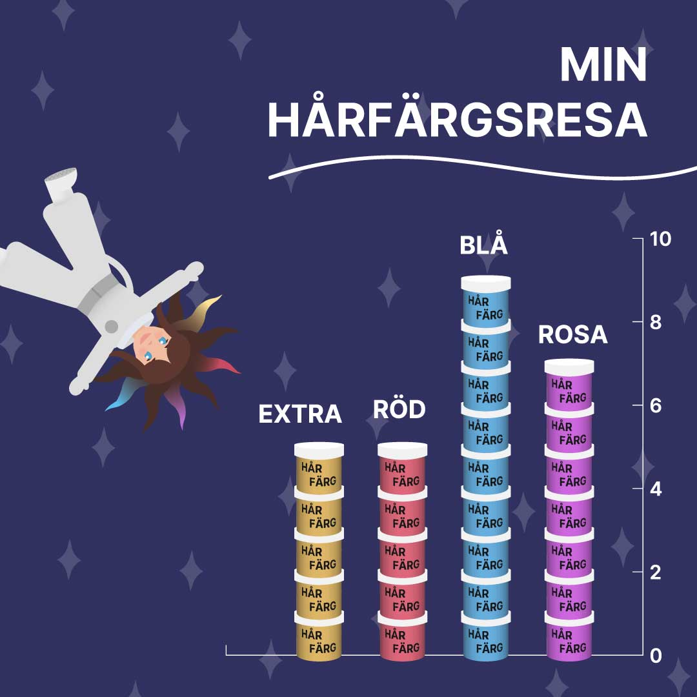

TITEL, KATEGORI
Kort info om projektet
TO COFFEEGROUND
TITEL, KATEGORI
An app that creates recipes based on what is currently in your fridge. It considers your foods closest to spoiling as well as other health considerations. Made in collaboration with Ulrik Claesson.
TO FOODAI

TITEL, KATEGORI
Kort info om projektet
TO INFOGRAPHIC